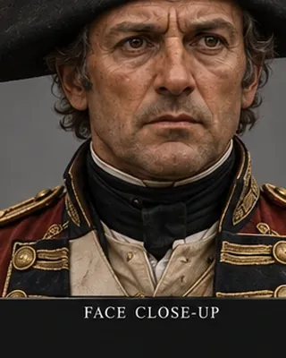

1792–1794 · British officer

Led the British contingent that took Guwahati in 1792 and Rangpur in March 1794; recalled in April 1794.
Record confidence: high.
Open interactive profile
1792–1794
February 1793